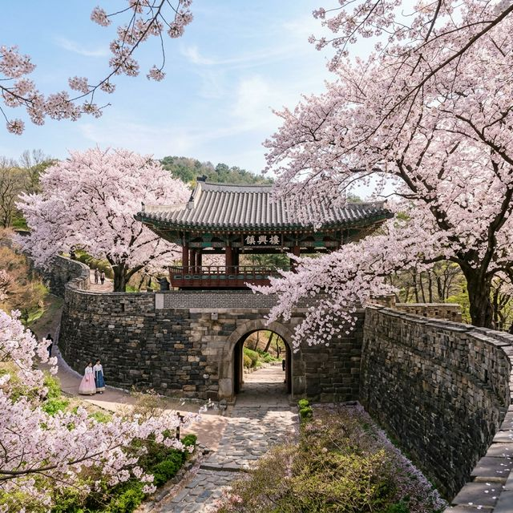
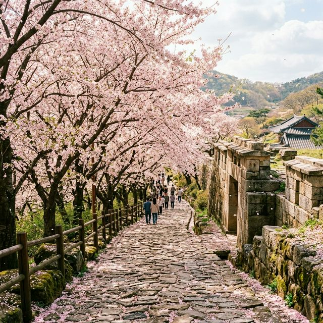
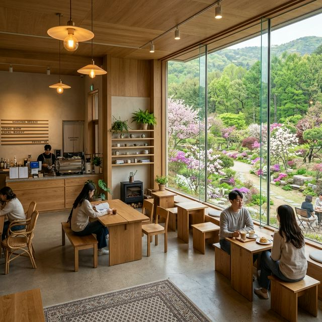

▲ 역사적인 강화산성 북문 주위를 화려하게 수놓은 분홍빛 벚꽃의 자태
강화도에는 여러 벚꽃 명소가 있지만, 강화산성 북문(진송루)으로 향하는 길은 압권입니다. 고려궁지 정문에서부터 북문에 이르는 약 1km 구간은 아스팔트 길 양옆으로 거대한 벚꽃 나무들이 줄지어 서 있어, 만개 시기에는 하늘이 보이지 않을 정도의 완벽한 꽃 터널을 형성하는데요.
무엇보다 이곳이 매력적인 이유는 통행 제한 덕분입니다. 벚꽃 시즌에는 차량 출입을 엄격히 통제하기 때문에, 방문객들은 매연이나 경적 소리 없이 오로지 발걸음 소리와 새소리, 그리고 흩날리는 꽃잎 소리에 집중하며 산책할 수 있습니다. 경사가 완만하여 아이들과 함께 걷기에도, 부모님을 모시고 효도 관광을 오기에도 이보다 좋은 코스는 찾기 힘들 것입니다.
벚꽃길만 걷기에는 강화도의 역사가 너무나 깊습니다. 강화나들길 1코스(심도역사문화길)의 백미가 바로 이 구간을 포함하고 있는데요. 전체 18km의 긴 코스 중에서도 핵심적인 역사 유적지들만 골라 걷는 틈새 코스를 제안해 드립니다.
조선 철종의 잠저였던 용흥궁과 서양식 건축물에 전통 한옥 양식을 담아낸 성공회 강화성당은 고려궁지로 가는 길목에 위치해 있어 꼭 들러보아야 할 포인트입니다. 이곳들을 지나고 나면 비로소 본격적인 벚꽃 대잔치가 시작되는 고려궁지 입구에 도착하게 됩니다. 몽골의 침략에 맞서 강화도로 수도를 옮겼던 고려의 파란만장한 역사를 되새기며 걷노라면, 벚꽃의 화사함이 조금은 더 애틋하게 다가올 것입니다.

▲ 벚꽃 잎이 비처럼 내리는 강화나들길 1코스 구간의 평화로운 산책로
인생 사진을 건지기 위해서는 타이밍과 장소 선정이 중요합니다. 북문길은 워낙 명당이 많지만, 솔직히 가장 예쁜 샷은 성벽과 꽃을 함께 담을 때 나옵니다.
벚꽃 시즌 강화도는 섬 입구부터 정체가 시작됩니다. 주차 스트레스를 줄이는 팁을 공개합니다.
참고로 2026년 4월 3일 현재, 강화도 정통 벚꽃 축제인 '강화산성 벚꽃길 행사'가 진행 중이므로 주말에는 차량 통제가 있을 수 있습니다. 가급적 대중교통을 이용하거나, 주말보다는 평일 이른 오전 방문이 가장 쾌적합니다.
꽃구경 후 허기를 달래줄 미식 포인트는 강화도의 또 다른 재미입니다. 관광객 위주의 식당보다 현지인들이 입을 모아 칭찬하는 곳으로 골랐습니다.
강화도 로컬들 사이에서 해물 양이 많기로 유명한 곳입니다. 바다의 향이 가득 밴 진한 국물은 걷느라 지친 피로를 한 번에 씻어줍니다. 칼국수와 함께 나오는 강화도 순무 김치는 이곳의 숨은 보물입니다.
한옥 갤러리 카페로 단순한 커피 맛을 넘어 정적인 쉼을 제공합니다. 정성스럽게 관리된 한국 전통 정원에서 마시는 대추차는 중년 방문객들에게 압도적인 지지를 받고 있습니다.

▲ 벚꽃 산책 후 힐링하기 좋은 강화도 숲속 감성 카페의 통창 뷰
카페 이름처럼 마니산 숲을 바라보며 말 그대로 '멍때리기' 좋은 곳입니다. 고지대에 위치해 있어 강화도의 산과 바다를 한눈에 조망할 수 있으며, 숲속에 들어와 있는 듯한 느낌을 줍니다. 숲세권 카페의 정석이라 할 수 있죠.
벚꽃길에서 내려와 차로 5분 거리에는 강화도의 랜드마크 조양방직이 있습니다. 옛 방직공장을 개조한 이 거대한 빈티지 카페는 벚꽃보다 더 많은 볼거리를 제공한다고 해도 과언이 아닙니다. 골동품 전시장을 방불케 하는 인테리어와 압도적인 규모 덕분에 강화도 여행의 마지막 코스로 제격입니다.